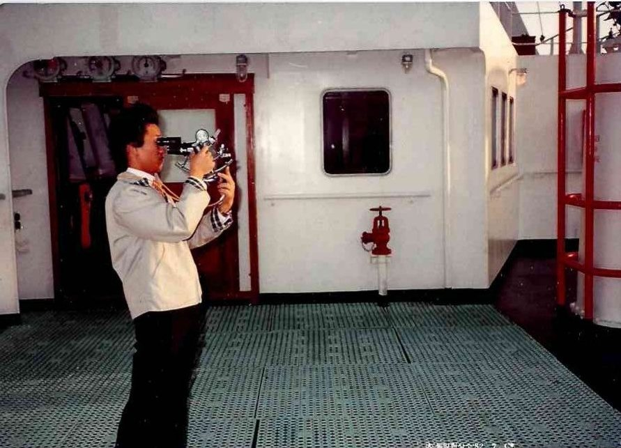
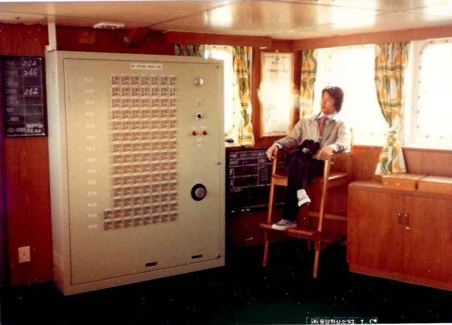
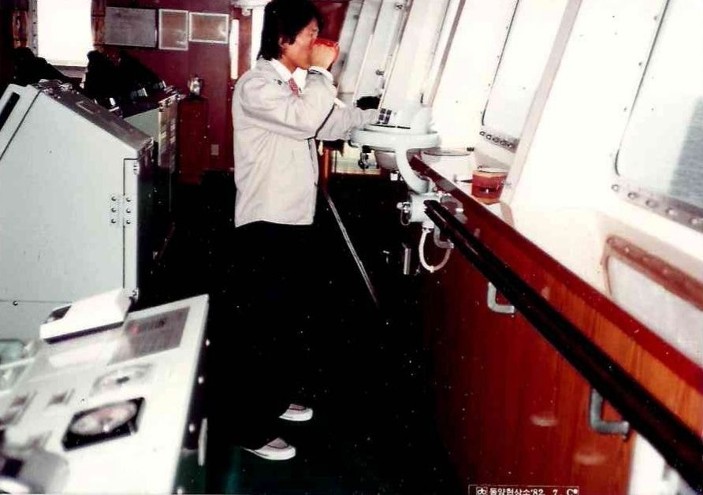
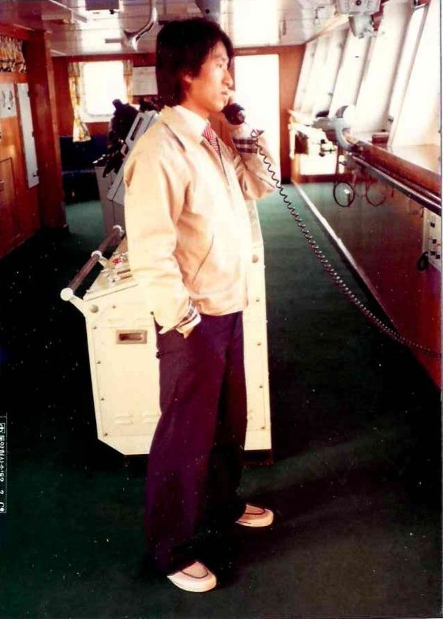
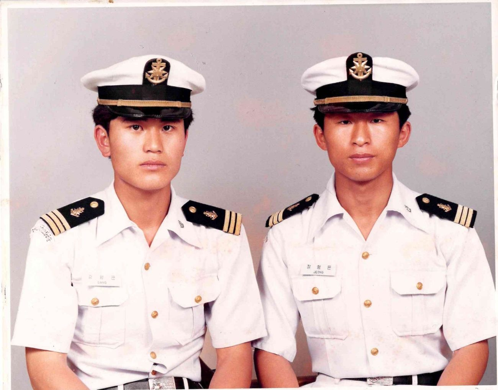
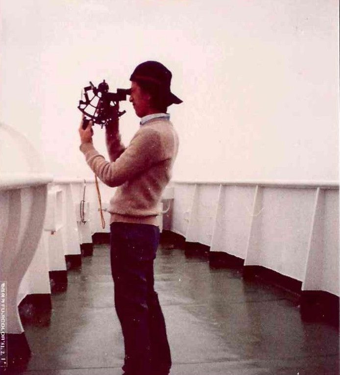
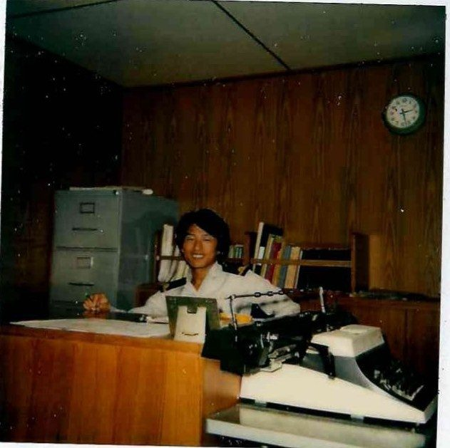
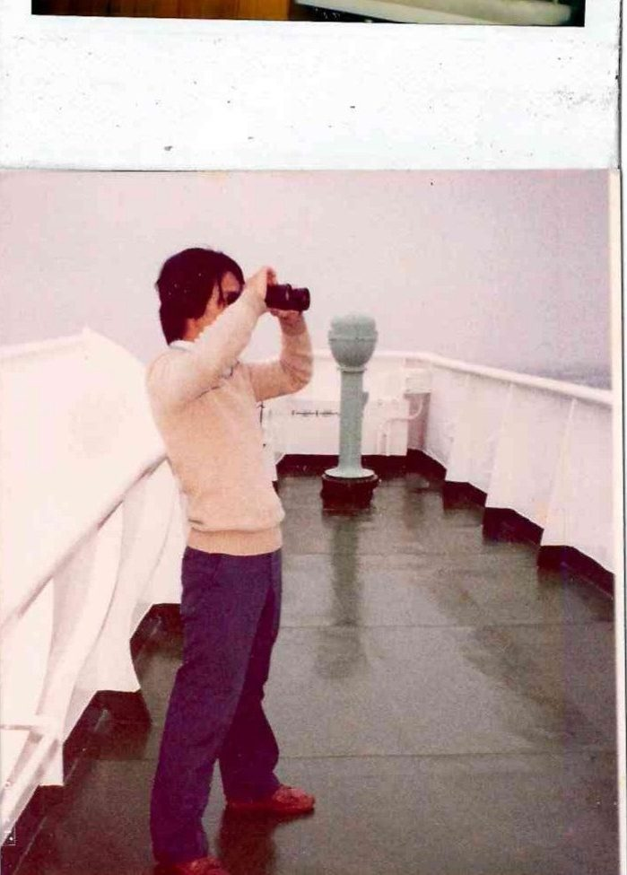

Ship’s Deck Officer
I entered Mokpo National Maritime College in March 1979 and came out in August 1981 with a navigation and maritime officer certification. Watchkeeping, stability, stowage, chartwork — the trade taught from the ship’s side rather than the office’s.
In September 1981 I joined Pan Ocean as an apprentice officer on a bulk carrier. Bulk teaches you what a cargo actually does at sea: how it settles, how it shifts, what a badly planned loading sequence costs you three days later.
From there to Korea Line as third officer on a container ship — Long Beach, June 1982 — and then to Bowoon Shipping as second officer on a chemical tanker. Three cargo types, three completely different sets of rules; boxes, bulk and liquid chemicals do not forgive the same mistakes.
I came ashore in March 1986. I have spent the forty years since arranging cargo for other people, and I have never stopped thinking about it the way a deck officer does.







